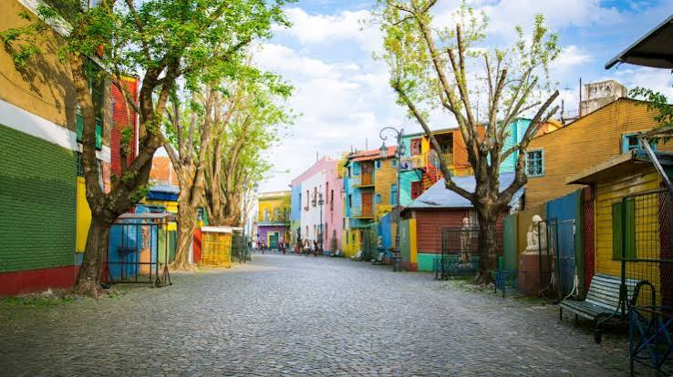
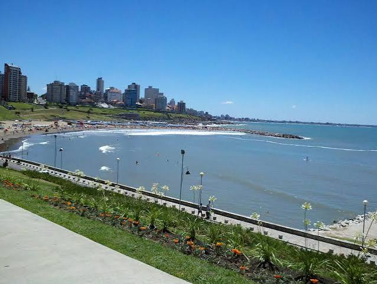
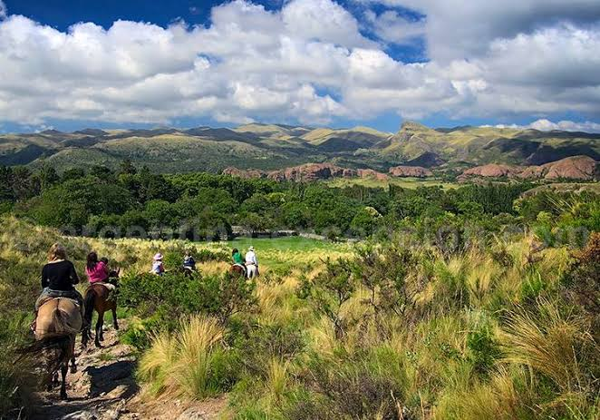
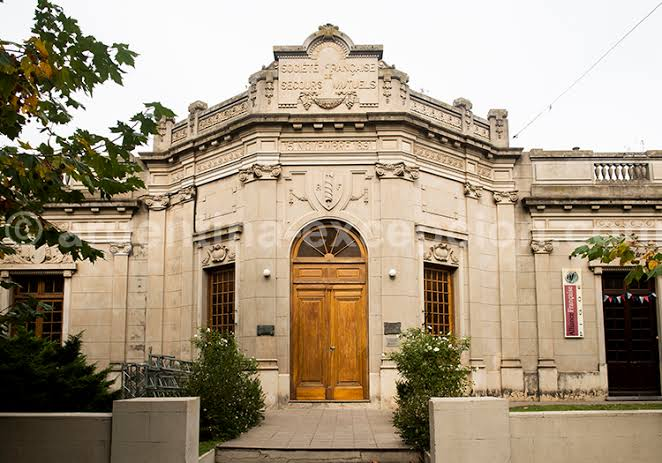
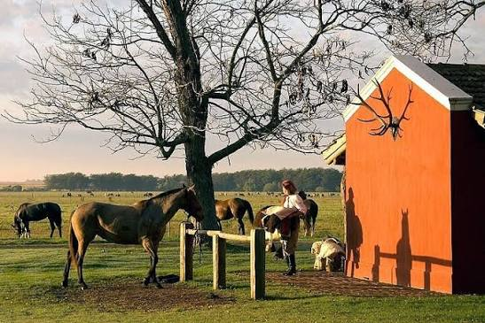

L'Argentine hors des circuits classiques
Ce voyage propose une autre vision de l'Argentine. Après Buenos Aires, direction la côte atlantique à Mar del Plata, puis les plaines infinies de Tres Arroyos et Pigüé. Vous découvrirez une Argentine plus intime : traditions locales, rencontres, paysages ouverts et rythme plus lent. Un parcours pensé pour ceux qui aiment les chemins de traverse et les véritables immersions.
Le voyage en un coup d'œil

🏛️ Buenos Aires autrement
- Quartiers populaires et authentiques
- Rencontres avec les habitants
- Culture locale et tango de quartier
- Loin des sentiers touristiques

🌊 Côte atlantique
- Mar del Plata et ses plages
- Architecture balnéaire
- Pêche et traditions maritimes
- Océan Atlantique à perte de vue

🌾 Tres Arroyos & Pampa
- Immersion dans la Pampa profonde
- Estancias et champs de blé
- Traditions gauchos
- Paysages ouverts et ciel immense

🇫🇷 Pigüé & héritage français
- Ville fondée par des immigrants aveyronnais
- Architecture et traditions du Sud de la France
- Rencontres et histoire unique
- Authenticité et chemins de traverse

🐎 Vie d'Estancia
- Immersion chez l'habitant ou en estancia
- Asado traditionnel au feu de bois
- Mate partagé avec les locaux
- Rythme lent et hospitalité argentine
🧉 Rencontres & authenticité
- Échanges avec les habitants
- Rituel du mate partagé
- Histoire de l'immigration
- Immersion culturelle totale
La Pampa à perte de vue
Des horizons infinis, un ciel immense et le silence des plaines. Ici, le temps s'arrête et l'âme de l'Argentine se révèle dans sa plus pure simplicité.
Votre itinéraire jour par jour
Buenos Aires & la Côte
Buenos Aires autrement
Arrivée et installation dans un quartier authentique. Découverte de Buenos Aires loin des circuits classiques : marchés de quartier, cafés historiques, rencontre avec des artistes locaux et ambiance du tango de barrio.
Route vers Mar del Plata
Départ vers la côte atlantique. Traversée des premières plaines agricoles. Arrivée à Mar del Plata, installation et première balade sur la côte, découverte de l'architecture balnéaire et du port de pêche.
Mar del Plata authentique
Rencontre avec des pêcheurs locaux, visite des ateliers d'artisans et déjeuner de fruits de mer frais. Après-midi libre pour explorer les plages sauvages et les falaises de la côte.
Au cœur de la Pampa
Entrée dans la Pampa : Tres Arroyos
Route vers l'intérieur des terres. Les paysages se transforment en immenses plaines agricoles. Arrivée à Tres Arroyos, cœur battant de la Pampa. Installation en estancia ou chez l'habitant.
Vie d'Estancia
Immersion totale dans la vie rurale : participation aux tâches quotidiennes, découverte du travail du bétail, apprentissage des traditions gauchos. Soirée autour d'un asado traditionnel au feu de bois.
Rencontres & Mate
Journée consacrée aux rencontres avec les habitants de la région. Partage du mate, échanges sur la vie dans la Pampa, histoire de l'agriculture et des grandes familles locales.
Route vers Pigüé
Continuation vers l'ouest à travers les champs de blé et de tournesols. Arrivée à Pigüé, ville à l'histoire unique fondée par des immigrants venus d'Aveyron à la fin du 19ème siècle.
Pigüé : l'Argentine aveyronnaise
Découverte de l'héritage français : architecture, noms de famille, traditions culinaires mêlant Argentine et Sud de la France. Visite du musée local et rencontre avec les descendants des fondateurs.
Paysages et traditions
Excursion dans les environs de Pigüé : sierras, paysages vallonnés contrastant avec la plaine, et découverte des estancias locales. Dîner d'adieu avec les hôtes.
Retour & Départ
Retour vers Buenos Aires
Longue route de retour à travers la Pampa. Arrêts dans les petites villes de province pour déjeuner et s'imprégner une dernière fois de l'atmosphère locale. Arrivée à Buenos Aires en soirée.
Départ
Petit-déjeuner d'adieu. Transfert à l'aéroport international d'Ezeiza. Vol retour avec des souvenirs plein les yeux et le goût de l'Argentine profonde.
La côte atlantique sauvage
De Mar del Plata aux plages infinies, l'océan Atlantique offre un spectacle brut et majestueux, loin des stations balnéaires conventionnelles.
📝 Voyage en cours de finalisation
Ce programme est encore en cours d'élaboration. Les détails exacts (durée définitive, hébergements précis, tarifs) seront ajustés selon vos envies et vos dates. Vous souhaitez être informé(e) en priorité ou l'adapter à vos envies ?
Formules & Organisation
🎒 Formule Autonomie
- Location de véhicule ou transports en commun
- Road-book détaillé avec adresses authentiques
- Mise en relation avec les hôtes locaux
- Assistance à distance 24h/24
✨ Formule Sérénité
- Tout le programme Autonomie
- Guide francophone VPDVOYAGES
- Transferts privés en véhicule confortable
- Accompagnement personnalisé et rencontres facilitées
🛂 Formalités
- Passeport : Valable 6 mois après retour
- Visa : Aucun visa pour les Français (90 jours)
- Monnaie : Peso argentin (ARS) - Change via Western Union ou casas de cambio
- Assurance : Fortement recommandée
🎒 Équipement
- Vêtements : Prévoir toutes les saisons (vent sur la côte, froid en Pampa)
- Chaussures : Bonnes chaussures de marche pour les estancias
- Adaptateur : Prises type C/I (220V)
- Esprit : Ouverture d'esprit et goût pour l'imprévu !
Votre itinéraire sur la carte
De Buenos Aires à Pigüé, en passant par la côte atlantique et la Pampa profonde : cliquez sur chaque point doré pour découvrir les étapes de votre voyage.
Bon séjour en Argentine authentique !
Buenos Aires · Mar del Plata · Tres Arroyos · Pigüé · L'Argentine intime
Parlons de votre projet →